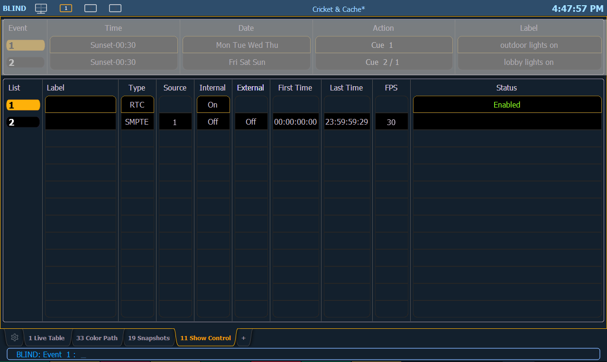

Event List
The lower portion of the show control display contains the event lists used in the console. Events are contained within a specific event list (like cues within a cue list). Each event list has a specific show control protocol type that it uses: MIDI, SMPTE, Analog, or RTC. Getting started with an event list is the same regardless of which show control protocol you are using.

Softkeys are available for the various event list options:
- List - is the event list number.
- <Event> [1][/][Enter] - creates event list 1.
- Label - names the event list.
- Type - sets which type of show control protocol to use; MTC, SMPTE, Analog, Network, or RTC. Only one protocol can be used at a time per list.
- Source - should match the Group ID used in the connected Net3 Show Control, I/O Gateway, or the built-in ports (when available).
- Internal - enables the list to use internal timing sources. See Internal vs. External Time .
- External - enables the list to use external timing sources. See Internal vs. External Time .
- First Time - sets the first time that the console will use when using internal timing.
- Last Time - sets the last time that the console will use when using internal timing.
- FPS - sets how many frames per second (FPS) will be used; 30, 25, 24.
- Status - current status of the event list.